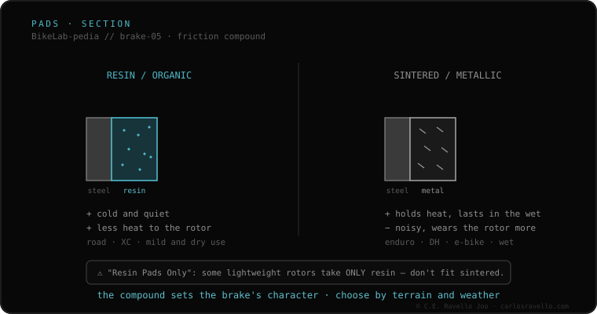

Pads are the friction block the caliper clamps against the rotor, and there are two compounds. Resin (organic) pads are soft: great cold bite, quiet and smooth, but handle less heat and wear faster. Sintered (metallic) pads are pressed metal particles: they handle a lot of heat without fading, last longer and perform in wet/mud, but are noisier and wear the rotor more. Some budget rotors only accept resin («Resin Pads Only»).
It's the workshop's most common brake decision: resin or sintered? It depends on your riding, and getting it wrong has consequences.
Resin gives a progressive, quiet bite, ideal for road and XC, but on long descents it can glaze and lose power (fade). Sintered needs some heat for its best bite, is louder, but resists extreme heat and abrasive water: the pick for enduro and downhill. Both need a bedding-in process when new.

The pad must match your caliper model's exact shape. Resin works on any rotor; sintered needs hardened-steel rotors (don't put them on rotors marked «Resin Pads Only», they gouge them). When switching compound on a used rotor, sand the track to remove the previous residue and avoid noise.
If you don't know which mount, rotor or fluid your brake uses, send us the case. Real diagnosis, nothing to sell you. Message us on WhatsApp
It depends: resin for road/XC (quiet, cold bite); sintered for enduro/downhill and wet (handles heat, lasts longer). There's no universal «best».
They need bedding-in: several progressive stops to transfer a layer of material to the rotor. Before that they brake little.
Yes, but sand the rotor track well to remove the previous compound's residue; otherwise it'll be noisy. And check the rotor accepts the new compound.
© 2026 BikeLab Studio. Content under CC BY 4.0: you may copy, translate and publish it, even for commercial purposes. Citation is mandatory. Without attribution, the license terminates automatically (CC BY 4.0, §6.a) and the use becomes copyright infringement: we request the removal of the content and its deindexing. · Design and ownership: Carlos Ravello Joo